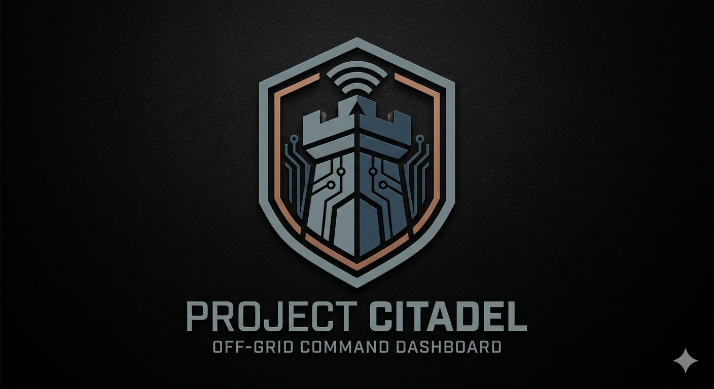

🛡️ PROJECT CITADEL // COMMAND CONTROL STATION
📡 HUB LINK STATUS: SECURED // OFF-GRID LOCAL NET ACTIVE
ZULU SYNC PENDING...
📝 LIVE COCKPIT SCRATCHPAD // STATION REFERENCE LOGS
AUTO-SAVE MEMORY: LOCKED ON DISK